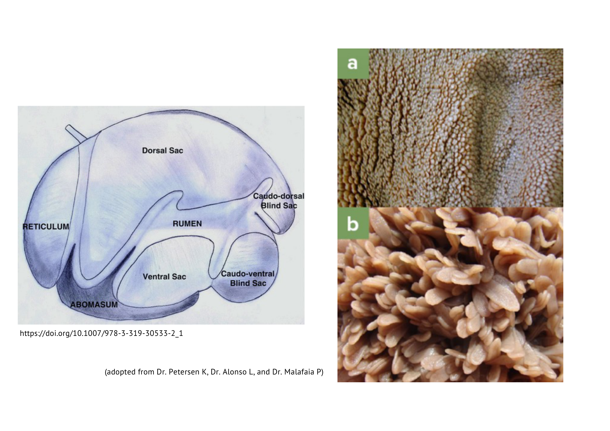
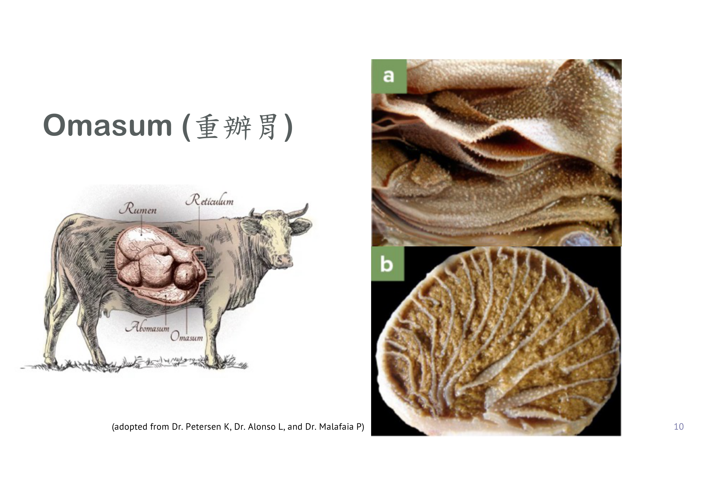
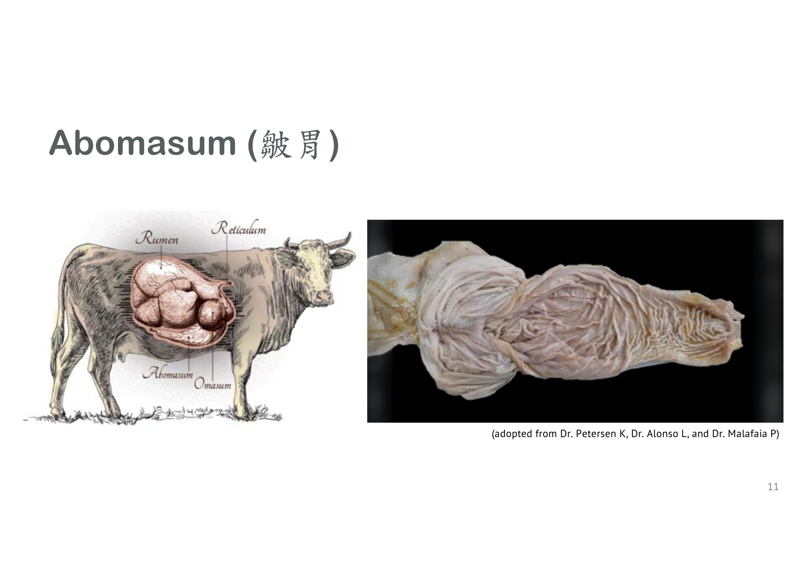
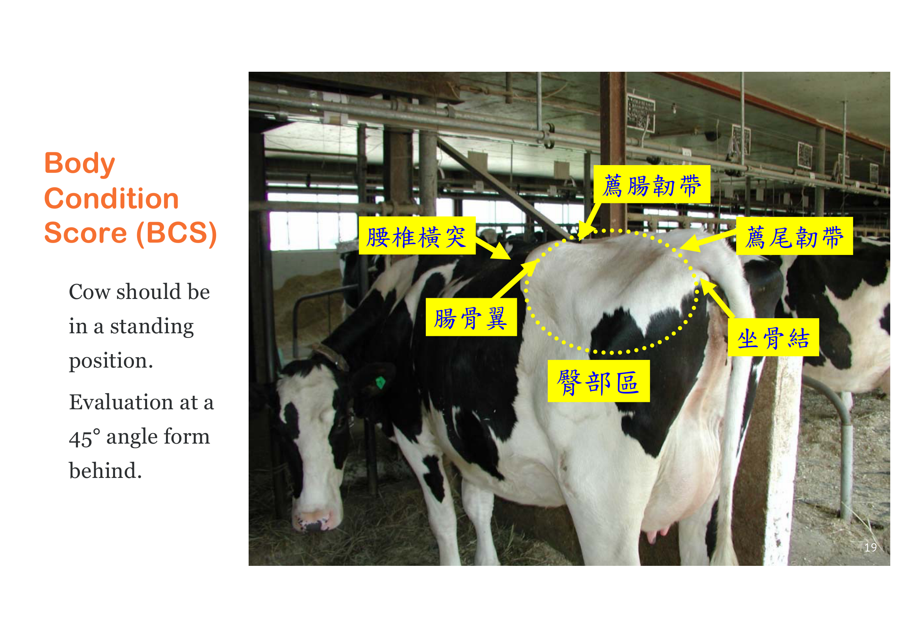
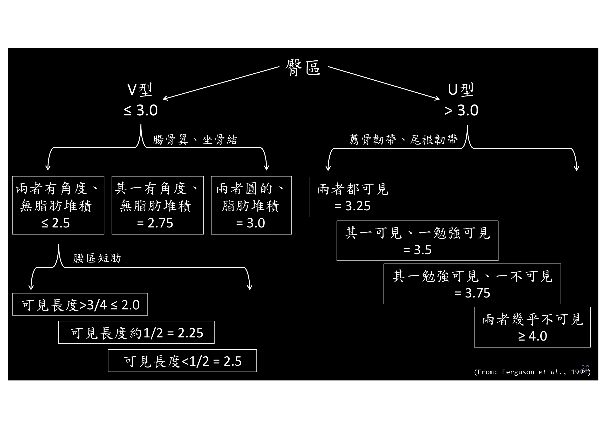
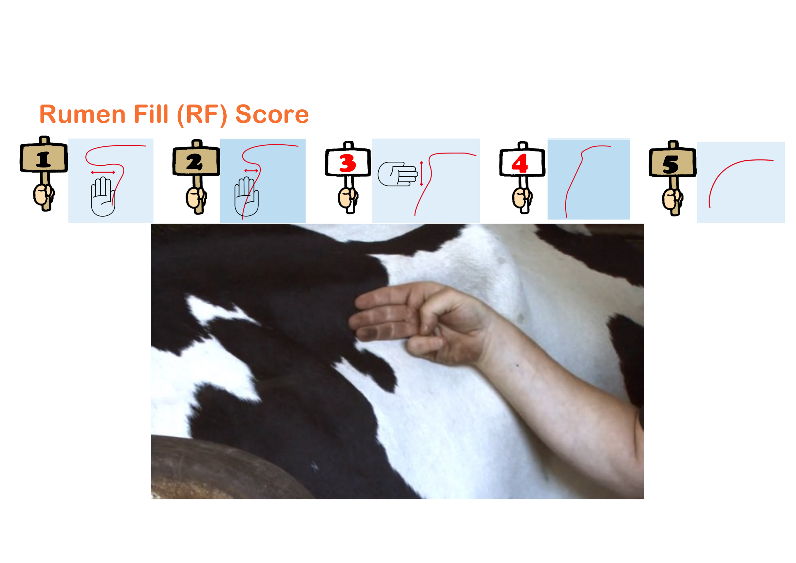
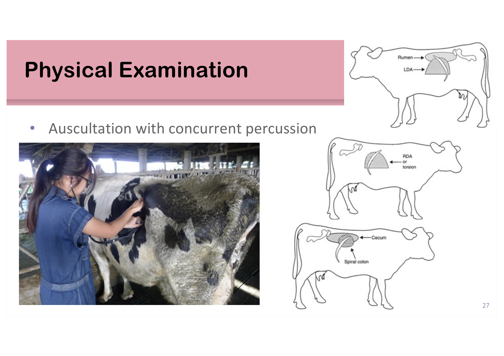
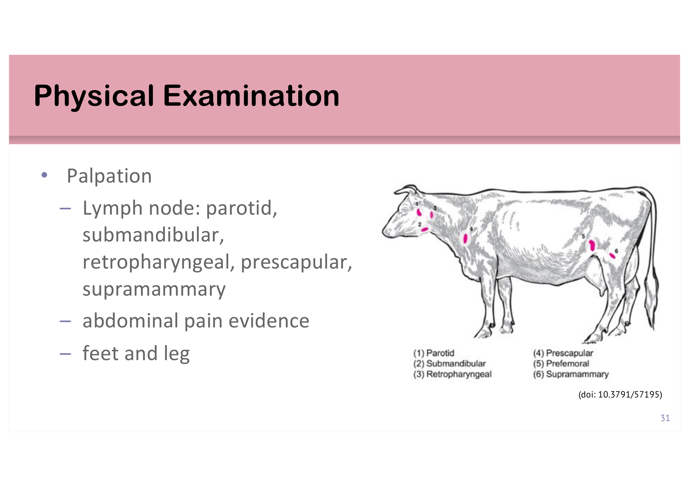

重點摘要
這是反芻動物臨床檢查的「操作手冊」——從四個特化胃室的解剖構造開始（這是後面理解所有觸診/聽診部位的地圖），接著走一遍完整的理學檢查流程：先遠觀（posture／gait／behavior），再依序視診（BCS、RF評分）、聽診（瘤胃、心臟、肺臟，各有物種／年齡別的正常數值）、觸診（淋巴結、腹痛、四肢），最後檢查頭頸部與直腸。這頁最大的價值是把抽象的「怎麼摸、怎麼聽」變成具體的解剖位置圖與評分卡，圖片比文字更重要，建議對照圖片複習。
四胃解剖地圖
推測國考高頻
推測國考高頻
臨床實作核心
※ 「推測國考熱點」是我依內容特性（有明確數字表格、圖像辨識類考點）做的個人判斷，沒有實際核對過歷屆考古題，僅供參考、不是驗證過的事實。
- 四個特化胃室：瘤胃（rumen，90–120L，微生物發酵VFA）、蜂巢胃（reticulum，蜂巢狀黏膜）、重瓣胃（omasum，葉狀黏膜擠壓食糜）、皺胃（abomasum，唯一有腺體分泌胃酸的「真胃」）——順序是食糜實際流動的路線。
- 理學檢查的標準順序：先遠觀（姿勢、步態、行為），再從一側開始檢查、移到對側、檢查後軀，最後檢查頭頸部——這個「先遠後近、先整體後局部」的邏輯本身就是常考的檢查原則題。
- BCS（1–5分，每0.25分一級）與RF評分（1–5分）都是站在牛隻後方45°角評估，前者看腰薦部位脂肪覆蓋（腸骨翼、坐骨結、薦骨韌帶等地標的可見程度），後者看左側腰窩瘤胃充盈程度——推測是圖像辨識類選擇題的常見素材。
- 生命徵象隨物種與年齡而異：成牛體溫38.0–39.0°C、心跳60–80bpm、呼吸15–35bpm；犢牛與羊隻數值普遍偏高——這組數字表格推測是計算題／選擇題的常見出題材料。
- 聽診搭配觸診／叩診可以定位特定疾病：左側聽到「ping」音提示左方皺胃移位（LDA），右側則可能是RDA或扭轉，這個定位邏輯直接連結到臨床上的皺胃疾病診斷。
反芻動物特化胃室 The Special Stomach in Ruminants
反芻動物（牛、羊、鹿等）擁有一個分成四個高度特化區室的大胃，讓牠們能發酵、利用單胃動物無法消化的粗纖維植物性飼料。這張解剖地圖是後面所有觸診／聽診部位的基礎，務必先建立起來。
Rumen
Reticulum
Omasum
Abomasum（真胃）
瘤胃與蜂巢胃 Rumen & Reticulum
瘤胃（rumen）是反芻動物主要的消化器官，容積達90–120公升，內含數量龐大的共生微生物，將飼料發酵成VFA（見姊妹篇〈乳牛營養與飼養管理〉）；瘤胃內容物分氣體、液體、固體（纖維墊）三個相層。瘤胃理想pH值為6.5–6.8，反芻（rumination）促進唾液分泌，唾液pH 8.0–8.5，含碳酸鹽與磷酸鹽，作為瘤胃環境的緩衝液，每日分泌量可達130–150L（甚至到220–250L）。反芻的時間與頻率取決於粗纖維比例、長度與餵飼次數，每日反芻時間至少7小時。蜂巢胃（reticulum）黏膜呈蜂巢狀結構，與瘤胃間沒有明顯物理屏障，功能上常被視為同一個發酵單位（合稱reticulorumen）。

重瓣胃 Omasum（重辦胃）
重瓣胃內部由多片葉狀黏膜（laminae，俗稱「百頁胃」）組成，功能是擠壓食糜、吸收水分與部分VFA，並將食糜篩選後送往皺胃。

皺胃 Abomasum（皺胃）
皺胃是反芻動物唯一具有腺體、能分泌胃酸與消化酶的「真胃」（true stomach），功能上對應單胃動物的胃。皺胃疾病（如皺胃移位）是成年乳牛常見的代謝性疾病，本頁後續「觸診」小節會說明如何透過聽診搭配觸診／叩診定位皺胃移位。

病史詢問與理學檢查總覽
臨床檢查不是從觸診牛開始，而是從問對問題、觀察對距離開始——這節建立整個檢查流程的骨架。
病史詢問 Obtain the History
- 病程長短、是漸進性還是突發性
- 最近一次分娩日期（母畜）
- 生產參數（泌乳牛：產乳量等）
- 其他併發徵象
- 採食狀況（是否拒食部分或全部飼料）
- 治療病史
- 牛群中先前記錄的疾病史
- 疫苗接種／驅蟲病史
- 放牧或舍飼管理方式
理學檢查的目的與限制
理學檢查提供獸醫師評估病患健康狀態的資訊，結合病史後能判斷問題所在、聚焦到特定器官系統。但實務上因經濟與時間限制，往往無法完成一份完整的理學檢查——因此必須熟悉整套檢查流程，才能判斷哪些項目是必要的、哪些可以省略。
標準檢查順序重要
先不驚擾動物
※ 這個「先遠後近、先整體後局部」的順序本身就是重要的檢查原則，推測是選擇題常考的流程排序題型。
視診：BCS與RF評分重要
視診的第一步是評估姿勢（posture）、步態（gait）、行為（behavior）與整體身體狀況；身體狀況又進一步細分成兩套標準化評分系統——這節是全頁我推測國考密度最高的部分，因為評分卡本身就是很好出圖辨題的素材。
視診四要素
姿勢（posture）、步態（gait）、行為（behavior）、身體狀況（physical condition：BCS與RF score）。
體態評分 Body Condition Score (BCS)
乳牛常用1–5分量表，每0.25分為一級。評估時牛隻應維持站立姿勢，評估者站在牛隻後方、以45°角觀察臀部區域。


瘤胃充盈度評分 Rumen Fill (RF) Score
同樣採用1–5分量表，評估者以手掌／手指觸診左側腰窩（左側最後肋骨與腸骨翼之間的凹陷區）瘤胃充盈與凹陷程度：分數越低代表瘤胃越空虛（凹陷越明顯），分數越高代表瘤胃越飽滿（凹陷消失、甚至外凸）。

生命徵象與聽診重要
體溫、心跳、呼吸的正常值都因物種與年齡而異，這組數字建議整理成表格反覆背誦；聽診部分則要記住瘤胃、心臟、肺臟各自的正常頻率範圍，以及聽診搭配叩診如何幫助定位皺胃疾病。
體溫 Body Temperature
| 族群 | 正常體溫範圍 |
|---|---|
| 成牛 Adult cattle | 38.0–39.0°C |
| 犢牛 Calf | 38.5–39.5°C |
| 成年羊／山羊 Goat/Sheep | 38.5–39.5°C |
| 幼羊 Kid/Lamb | 39.0–40.0°C |
心跳速率 Heart Rate（聽診）
| 族群 | 正常心跳範圍 |
|---|---|
| 成牛 | 60–80 bpm |
| 犢牛 | 70–90 bpm |
| 成年羊／山羊 | 70–110 bpm |
| 幼羊 | 110–140 bpm |
※ 聽診心臟除了速率，也要評估節律（rhythm）是否規則。
呼吸速率 Respiratory Rate（聽診）
| 族群 | 正常呼吸速率範圍 |
|---|---|
| 成牛 | 15–35 bpm |
| 犢牛 | 20–50 bpm |
| 成年羊／山羊 | 15–40 bpm |
| 幼羊 | 40–65 bpm |
※ 除了速率，也要聽診肺音（lung sound）是否正常。
瘤胃聽診 Auscultation: Rumen
正常瘤胃蠕動頻率約每2分鐘3–5次，評估時也要注意蠕動音的持續時間（duration）與強度（strength）。
聽診搭配叩診：定位皺胃疾病重要
聽診同時搭配叩診（percussion），在特定部位敲擊時若聽到清脆的「ping」金屬共鳴音，提示該部位有氣體積聚的擴張臟器，可用來定位不同的皺胃疾病：

腹部觸診：波動感 Ballottement
於右側腹部進行波動觸診（ballottement），若聽到「sloshing」（液體晃動）音，提示腹腔內有游離液體（intraabdominal fluid）。
觸診與頭頸部檢查
觸診主要用於評估淋巴結、腹痛徵象與四肢，最後收尾在頭頸部與直腸檢查。
淋巴結觸診 Palpation: Lymph Node
牛隻體表可觸診的淋巴結共六處：腮腺（parotid）、下頷（submandibular）、咽後（retropharyngeal）、肩前（prescapular）、股前（prefemoral）、乳房上（supramammary）淋巴結。

其餘觸診項目：腹痛證據（abdominal pain evidence，如觸診後出現呻吟、閃躲、背部拱起等反應）、四肢（feet and leg）檢查。
頭頸部評估與直腸觸診
- 頭頸部評估：是否左右對稱、眼／耳／鼻／口是否有分泌物、口腔（黏膜顏色、病灶、異物）、脫水程度評估
- 直腸觸診（rectal palpation）：用於評估生殖道、部分腹腔臟器狀態，是大動物臨床檢查的常規項目之一
雙語詞彙表 Bilingual Glossary
正文中第一次出現時都已經中英並列，這裡集中整理一份，方便考前只看英文名詞、測試自己記不記得對應的中文概念（反過來也可以）。
| 中文 | English | 一句話說明 |
|---|---|---|
| 瘤胃 | Rumen | 主要發酵器官，90–120L，理想pH 6.5–6.8 |
| 蜂巢胃 | Reticulum | 黏膜呈蜂巢狀，與瘤胃合稱reticulorumen |
| 重瓣胃 | Omasum | 葉狀黏膜擠壓食糜、吸收水分 |
| 皺胃 | Abomasum | 唯一有腺體分泌胃酸的「真胃」 |
| 反芻 | Rumination | 每日至少7小時，促進唾液緩衝液分泌 |
| 體態評分 | Body Condition Score (BCS) | 1–5分（每0.25分一級），評估脂肪覆蓋程度 |
| 瘤胃充盈度評分 | Rumen Fill (RF) Score | 1–5分，觸診左側腰窩瘤胃區飽滿程度 |
| 波動觸診 | Ballottement | 右側腹部觸診，sloshing音提示腹腔游離液體 |
| 金屬共鳴音 | Ping (sound) | 叩診搭配聽診，提示氣體積聚的擴張臟器 |
| 左方皺胃移位 | Left Displaced Abomasum (LDA) | 左肋骨弓後方聽到ping音 |
| 右方皺胃移位／扭轉 | Right Displaced Abomasum / Torsion (RDA) | 右側對應區域聽到ping音 |
| 腮腺淋巴結 | Parotid lymph node | 頭頸部可觸診淋巴結之一 |
| 下頷淋巴結 | Submandibular lymph node | 頭頸部可觸診淋巴結之一 |
| 咽後淋巴結 | Retropharyngeal lymph node | 頭頸部可觸診淋巴結之一 |
| 肩前淋巴結 | Prescapular lymph node | 軀幹可觸診淋巴結之一 |
| 股前淋巴結 | Prefemoral lymph node | 軀幹可觸診淋巴結之一 |
| 乳房上淋巴結 | Supramammary lymph node | 軀幹可觸診淋巴結之一 |
| 直腸觸診 | Rectal palpation | 評估生殖道與部分腹腔臟器 |
學習重點整理
考前快速掃過，標重要的三節是我推測這頁的國考主戰場。
練習題 Practice Quiz
涵蓋胃室解剖、BCS／RF評分、生命徵象、聽診定位各章節重點，最後一題為臨床情境整合題，先自己作答再點「顯示答案」核對。
皺胃（abomasum）是反芻動物唯一具有腺體、能分泌胃酸與消化酶的「真胃」，功能上對應單胃動物的胃；瘤胃、蜂巢胃、重瓣胃合稱「前胃（forestomach）」，主要負責發酵與物理處理食糜，不具腺體分泌功能。
評估BCS時，牛隻應維持站立姿勢，評估者應站在牛隻後方以45°角（而非0°正後方）觀察臀部區域，依腰椎橫突、腸骨翼、薦腸韌帶、薦尾韌帶、坐骨結等地標被脂肪覆蓋的程度判斷分數。
聽診搭配叩診時，左側肋骨弓後方聽到ping音提示左方皺胃移位（LDA）；右側對應區域聽到ping音則提示右方皺胃移位或扭轉（RDA／torsion）。腹腔游離液體的典型發現是右側腹部波動觸診時的「sloshing」音，而非叩診ping音。
先遠距離觀察，可以在不驚擾動物、不因保定或觸診改變牛隻行為的情況下，先取得姿勢、步態、行為等最自然狀態下的資訊，這些資訊一旦開始近距離接觸或保定就可能失真。頭頸部檢查（尤其口腔、眼耳鼻檢查）通常需要一定程度的保定與動物配合，較容易引起牛隻緊迫或防禦反應，因此放在檢查流程的最後，讓動物有機會在檢查過程中逐漸適應獸醫師的存在，同時也符合「先整體、後局部」的邏輯——先掌握全身性的整體印象，再聚焦到特定部位做細節檢查。
(1) 聽診發現：左側肋骨弓後方聽到ping音，提示左方皺胃移位（LDA），這與牛隻左側腹部凹陷（RF score偏低、瘤胃/皺胃區域異常）以及食慾下降、產乳量降低等臨床表現吻合。
(2) 時間點關聯：這隻牛分娩僅10天，正處於姊妹篇〈轉換期、低血鈣與DCAD〉提到的轉換期（產後21天內），也是低血鈣症好發的時間窗。低血鈣造成的平滑肌功能下降會降低瘤胃腸胃蠕動，正是皺胃移位（DA）的重要誘因之一——這個案例提示除了處理眼前的LDA，也應該評估這隻牛是否同時存在低血鈣，並檢視牧場的乾乳期／close-up期飼養管理與DCAD設計是否到位，才能從根本預防同類案例再次發生。